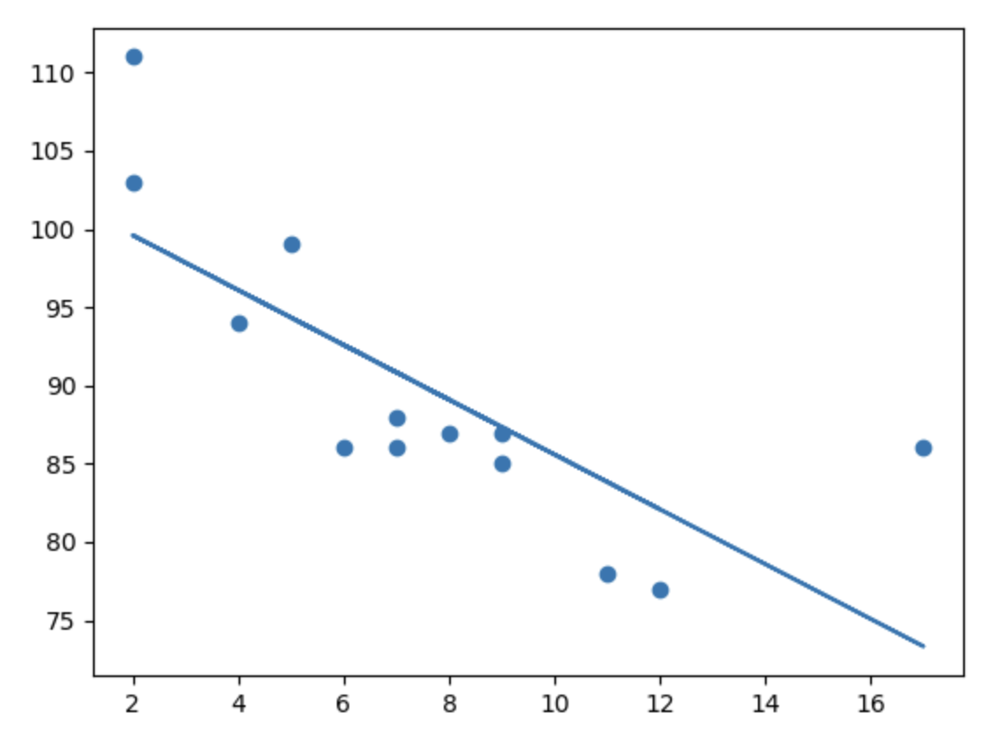

Definición
La Regresión Lineal es un algoritmo de aprendizaje automático que se utiliza para modelar la relación entre una variable dependiente (o variable objetivo) y una o más variables independientes (o características). Su objetivo principal es comprender y predecir cómo la variable dependiente cambia cuando una o varias variables independientes se modifican.
El nombre "lineal" proviene del hecho de que la regresión lineal modela esta relación mediante una ecuación lineal, que es una línea recta en un espacio bidimensional o un plano hiperplano en espacios de dimensiones superiores. La ecuación de la regresión lineal tiene la forma general:
y = β₀ + β₁x₁ + β₂x₂ + ... + βₚxₚ + ɛ
Donde:
y es la variable dependiente que queremos predecir. β₀ es la intersección en el eje y (el valor de y cuando todas las x son cero). β₁, β₂, ..., βₚ son los coeficientes que representan la relación entre cada variable independiente x₁, x₂, ..., xₚ y la variable dependiente y. ɛ representa el error, que es la diferencia entre el valor observado y el valor predicho por el modelo. El proceso de regresión lineal implica encontrar los valores óptimos de los coeficientes (β₀, β₁, β₂, ..., βₚ) que minimizan el error cuadrático medio (MSE) o alguna otra métrica de error. Una vez que se encuentran estos coeficientes, puedes utilizar la ecuación lineal para hacer predicciones sobre la variable dependiente y en función de los valores de las variables independientes.
A tener en cuenta
Este algoritmo es muy sensible a los outliers, por lo que es importante que los outliers se eliminen o se traten adecuadamente antes de ajustar el modelo. También se debe tener en cuenta que requiere que se cumplan ciertas suposiciones, como la linealidad, independencia de los errores y homocedasticidad. Si estas suposiciones no se cumplen, los resultados pueden ser poco confiables.
Bibliografía
Regresión Lineal Simple (Parte 1) - Rocio Salas Laines(Click para ir al enlace)
Regresión Lineal – Teoría (Click para ir al enlace)